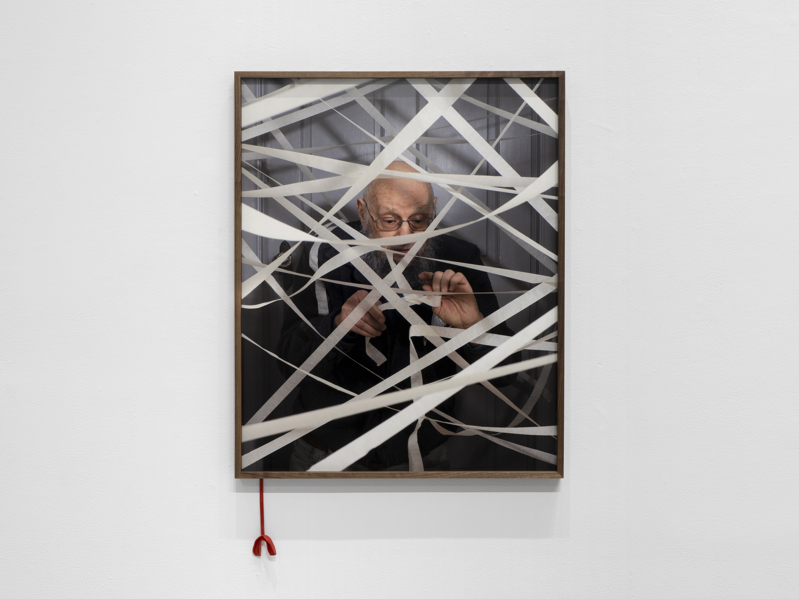
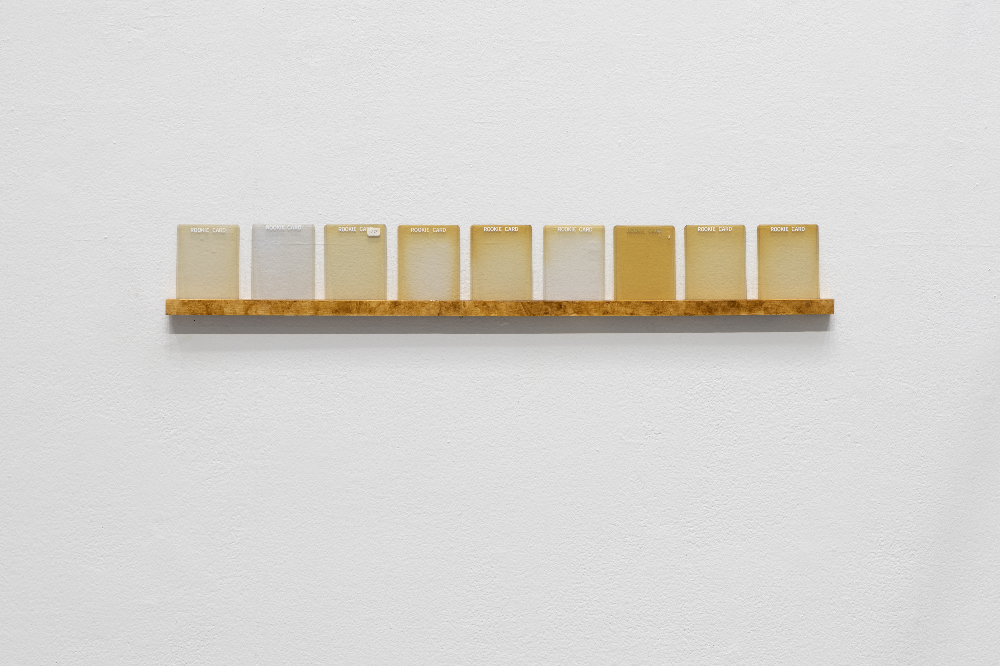
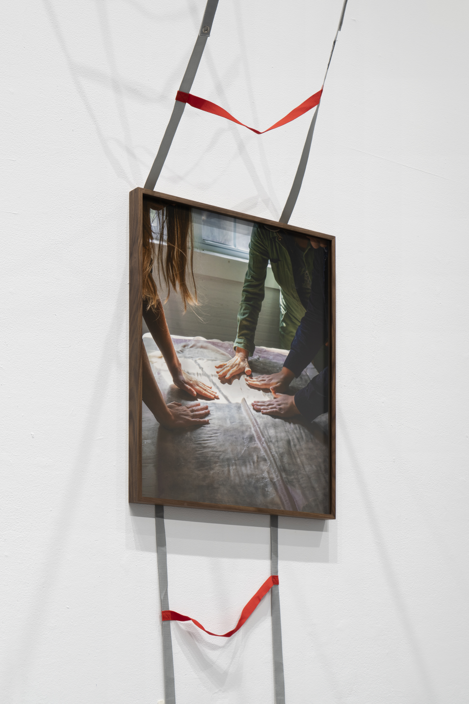
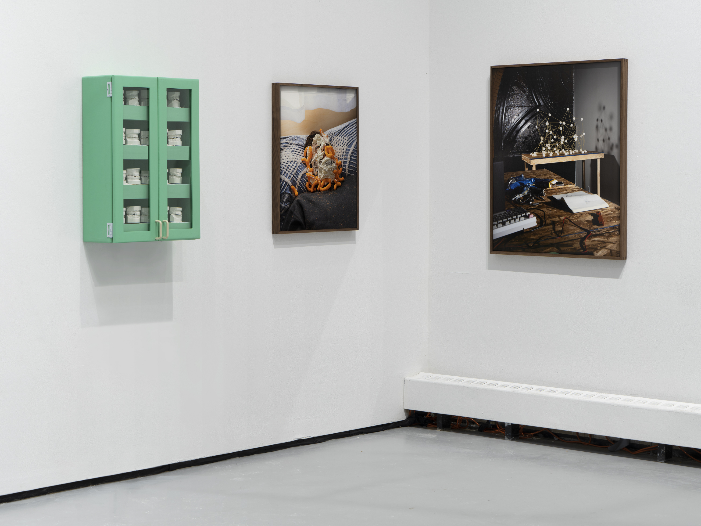
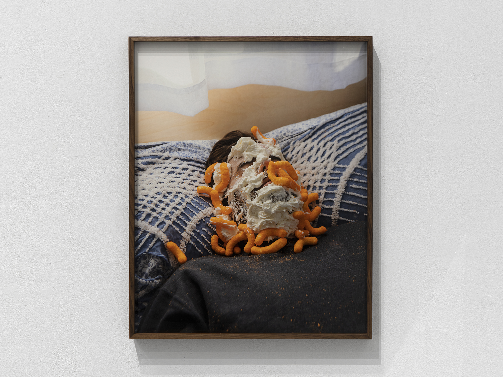
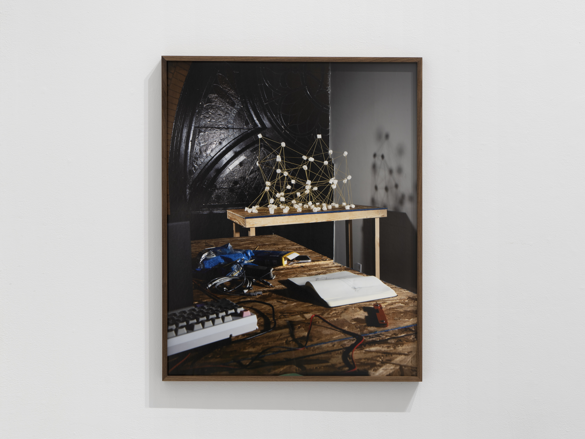
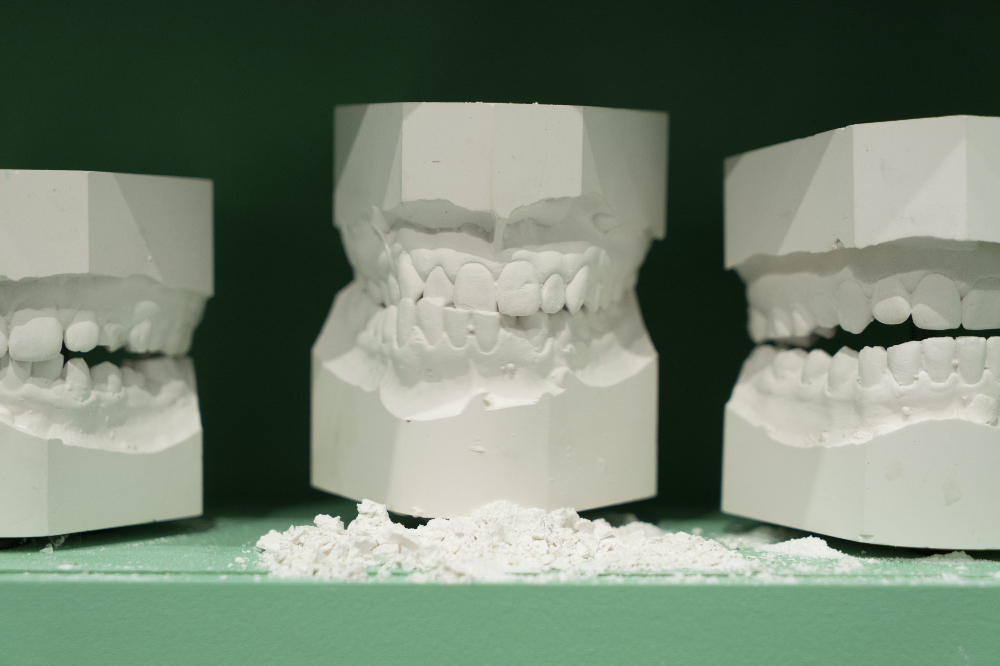

Installation view at Yale School of Art, 2022.
Glen in the Labyrinth, 2020, archival pigment print, 40" × 32".
Rookie Cards, 2022, baseball card protectors, maple, pine tar, 5" × 20" × 2".
Felting, 2021, archival pigment print 30" × 24".
Installation view at Yale School of Art, 2022.
Cheetos, 2020, archival pigment print 30" × 24".
Tower of Babel, 2020, archival pigment print 30" × 24".
Detail shot of Grind, 2022. Plaster dental molds, servo motors, painted wood, glass, 30" × 20" × 7".
Every action is an act of creation—of memories, of institutions, of rules, of the seemingly mundane. We shape the world in our hands like silly putty. In one of Dylan’s photographs, we see someone’s hands formed from a plaster mold. It’s like Frankenstein’s monster—fascinating in its deformity, at the same time carefully controlled and fundamentally uncontrollable. There’s a morbid curiosity in her work. A sense of play and wonder. She asks—How can we shape and morph our bodies? What happens if we add a little bit of gum to the clay? Does it just give us a pop of color or does it unravel its entire ecosystem? The only way to find out is to try.
Life, to Beckman, is absurd. It’s playing pictionary with pudding as the medium and your tongue as a writing instrument. It’s a dog wearing a wig. It’s baloney slapped on a car window. Her photographs remind me of the way a child plays with their parent’s hair. It’s an exploratory game. The kid wants to figure out the different things that hair can do—how it can change us. How when you put it up, your mom looks like she was just electrocuted. And when it’s covering her eyes, she kind of looks like Cousin Itt. But what happens if you pull a little harder? My god, when you tug hard, it can fucking hurt. Your mom lets out a scream. The scream changes her face. It’s a face we’ve never seen before. Everything is new. It’s sharp and gooey at the same time. The world is full of edges but how quickly those edges melt into molten lava. What are the edges of what we can be?
Beckman reconstructs those edges. She, quite literally, frames her personal and our collective histories. She places a trading card with a portrait of her sister—Hannah Girl—next to trading card of the Blood of Christ. She wonders what happens when you put corn hole in an art gallery. It’s all serious and it’s all a joke, just like life. As Annie Dillard writes–
“The joke of the world is less like a banana peel than a rake, the old rake in the grass, the one you step on, foot to forehead. It all comes together. In a twinkling. You have to admire the gag for its symmetry, accomplishing all with one right angle, the same right angle which accomplishes all philosophy. One step on the rake and its mind under matter once again. You wake up with a piece of tree in your skull. You wake up with fruit on your hands. You wake up in a clearing and see yourself, ashamed. You see your own face and it’s seven years old and there’s no knowing why, or where you’ve been since… You wake up and a plane falls out of the sky.
Life is a cosmic joke—hilarious, but it hurts too. It makes us bleed. By creating these contrasts—real/fake, natural/manmade, beautiful/disgusting, rigid/fluid—her photographs show us how closely violence and play sit next to each other.
But within this darkness, there’s a hope. There’s a chance that perhaps, if we can reconstruct our lives, we can bend the world to our will. What is a car if not a place to throw some baloney? If we frame our pasts, what if we took the frames off the wall? In her photos, we see constant evidence of our existence. A handprint on a window. It’s the exhilarating feeling of uncovering a lie. Maybe everything that feels solid is actually just melting. Maybe seasons can change. If life is a joke, maybe we’re still waiting for the punchline. Maybe we can write the punchline.